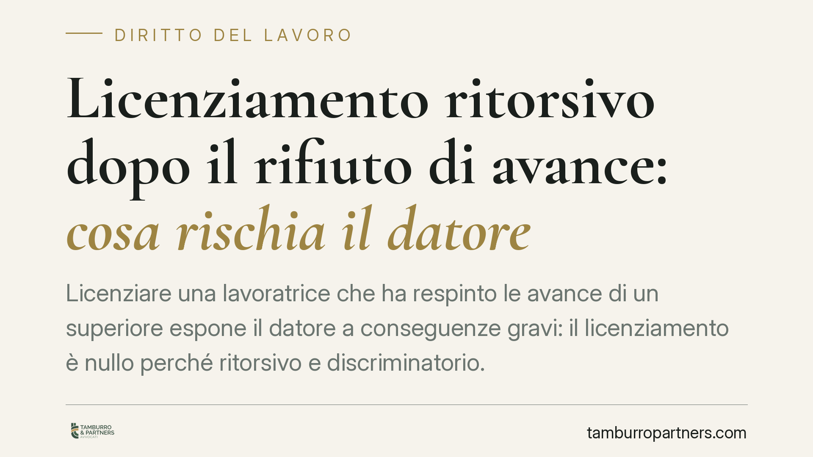

Licenziamento ritorsivo dopo il rifiuto di avance: cosa rischia il datore
Licenziare una lavoratrice che ha respinto le avance di un superiore espone il datore a conseguenze gravi: il licenziamento è nullo perché ritorsivo e discriminatorio. Ne derivano reintegra, risarcimento e un regime probatorio favorevole alla lavoratrice. Il tema tocca molestie sul lavoro, parità di genere e limiti al potere di recesso dell'impresa.

Il caso
Una lavoratrice viene licenziata dopo aver respinto le attenzioni e le pressioni di un superiore gerarchico. La difesa aziendale invoca ragioni organizzative o disciplinari, ma il quadro probatorio fa emergere un nesso tra il rifiuto e il recesso.
In simili vicende il giudice del lavoro è chiamato a verificare la reale causa del licenziamento. Se il motivo effettivo e determinante è la rappresaglia per il rifiuto, il recesso non regge: non è un licenziamento "ingiustificato", è un licenziamento nullo. La distinzione non è formale e incide pesantemente sulle tutele.
> Nota sulle fonti: il riferimento alla pronuncia di merito citata dalla stampa specializzata non risulta pienamente verificabile nei repertori ufficiali. Prescindiamo quindi dal singolo precedente e ragioniamo sul quadro normativo e giurisprudenziale consolidato, che è solido a prescindere dalla singola sentenza.
Inquadramento normativo
Il licenziamento intimato come ritorsione per il rifiuto di avance può configurarsi su due piani, spesso sovrapposti.
Sul piano ritorsivo, rileva l'art. 1345 del Codice civile: l'atto è nullo quando è determinato esclusivamente da un motivo illecito. Per il licenziamento ritorsivo "puro" la giurisprudenza richiede che il motivo di rappresaglia sia l'unica ragione del recesso, con onere della prova a carico del lavoratore.
Sul piano discriminatorio, entra in gioco il D.lgs. 198/2006 (Codice delle pari opportunità), che vieta le molestie sessuali e tratta come discriminazione il trattamento sfavorevole subito a causa del rifiuto o della sottomissione a tali molestie. Qui soccorre l'art. 40 D.lgs. 198/2006: la lavoratrice può limitarsi a fornire elementi di fatto precisi e concordanti da cui presumere la discriminazione; spetta poi al datore dimostrare l'insussistenza. È un'inversione, o meglio un'agevolazione, dell'onere probatorio che sposta il baricentro processuale.
Sul versante sanzionatorio, il licenziamento nullo per motivo discriminatorio rientra nell'art. 2, comma 1, D.lgs. 23/2015: il giudice dichiara la nullità e ordina la reintegrazione nel posto di lavoro, oltre al risarcimento commisurato alle retribuzioni perse dal licenziamento alla reintegra, con un minimo di cinque mensilità. In alternativa, la lavoratrice può chiedere l'indennità sostitutiva della reintegrazione pari a quindici mensilità (art. 2, comma 3, D.lgs. 23/2015): una facoltà che spetta a lei, non al datore.
Implicazioni pratiche
Per il datore di lavoro le conseguenze sono le più severe previste dall'ordinamento in materia di recesso. Non si tratta della sola indennità economica tipica del licenziamento ingiustificato: scattano reintegra e risarcimento, con il rischio concreto di dover reinserire la persona in azienda e di versare le retribuzioni maturate nel frattempo.
Un punto rilevante riguarda i termini di impugnazione. Nel regime generale, l'art. 6 L. 604/1966 impone di impugnare il licenziamento entro 60 giorni in via stragiudiziale e di depositare il ricorso entro i successivi 180 giorni. Per i licenziamenti nulli, come quelli discriminatori o ritorsivi, la giurisprudenza prevalente esclude invece l'applicazione di questa decadenza: l'azione resta soggetta alla sola prescrizione. Significa che la posizione della lavoratrice è protetta anche quando l'impugnazione non sia tempestiva secondo i termini ordinari. È un dato che datore e lavoratrice devono conoscere con esattezza.
Per la lavoratrice, il regime probatorio agevolato è l'elemento decisivo: raccogliere e conservare prove dei fatti (messaggi, testimonianze, cronologia degli eventi) rafforza in modo sensibile la posizione processuale.
Cosa fare in concreto
- Documentate i fatti: conservate messaggi, email, chat e annotazioni datate; individuate possibili testimoni degli episodi di molestia e delle pressioni.
- Attivate i canali interni: segnalate la condotta tramite le procedure aziendali o al referente per le pari opportunità, se presenti, mantenendo traccia scritta.
- Non date per scontata la decadenza: pur trattandosi di nullità, consigliamo di impugnare comunque il licenziamento per iscritto senza attendere, così da evitare qualsiasi eccezione.
- Valutate l'alternativa reintegra/indennità: ponderate con il legale se chiedere il rientro in azienda o l'indennità sostitutiva di quindici mensilità.
- Rivolgetevi tempestivamente a un professionista: la ricostruzione del nesso tra rifiuto e licenziamento richiede un'impostazione difensiva mirata fin dall'inizio.
Il punto di equilibrio
Il potere di recesso dell'impresa esiste, ma incontra un limite invalicabile quando il licenziamento diventa strumento di rappresaglia o di discriminazione. L'ordinamento non lascia margini: sanziona l'atto con la nullità e offre alla persona colpita le tutele più forti, insieme a un regime probatorio che riequilibra la posizione di debolezza. Per le imprese, la lezione è di metodo: ogni decisione di recesso deve poggiare su ragioni reali, documentate e verificabili.
---
Contributo informativo a cura di Tamburro & Partners Avvocati - Avv. Giuseppe Tamburro. Non costituisce parere legale.
Ogni storia di lavoro ha i suoi tempi.
Se gestisci HR e vuoi un confronto su contenzioso, ispezioni o licenziamenti, scrivi allo studio. Ti rispondiamo entro un giorno lavorativo.